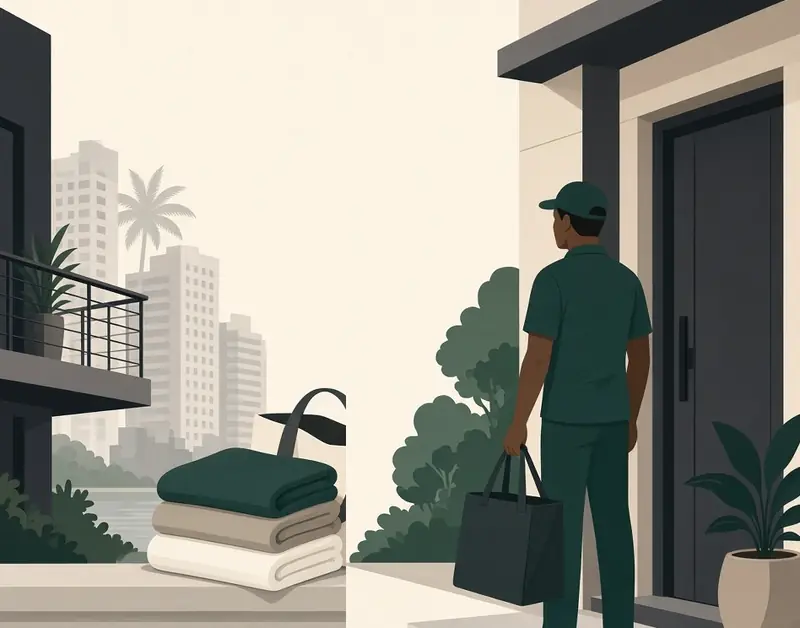
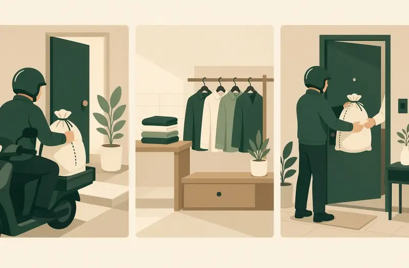

What Oya is
We collect clothes from homes and offices, take them to a few partner laundries we check ourselves, and bring them back on the day we agree, with photo proof at pickup and delivery.

Where we are
We are pre-launch. There are no customers yet.
We are lining up partner laundries now. The plan is 2 or 3 for a soft launch, and not more.
How it works

- Pickup. We collect clothes from your home or office, with a photo at pickup.
- Laundry. They go to one of a few partner laundries we check ourselves.
- Return. We bring them back on the day we agree, with a photo at delivery.